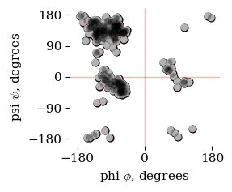

Ramachandran Plot#
This notebook provides the instructions and code to produce the corresponding figure presented in the textbook. Any figure made using Python or command-line tools will be described in a notebook like this one. These notebooks are provided so I can remember how to create these images and visualizations and speed up my work when returning to this project after a period of time. They will also provide templates for you, the student, to use should you wish to make your own version.
Trypsin#
See the notebooks for Geis’ 1974 trypsin structure and the trypsin visualization example for more information about trypsin.
An Image of Trypsin#
The py3Dmol image of trypsin generated by the code below is similar to Geis’ 1974 trypsin strcture. It is a alpha trace, a visulation that presents the central carbon atome of each amino acid (the \(\alpha\)-carbon) and connects them by straight lines. This style highlights the turn and twist that occurs at each amino acid. The tortional angle for the bond coming into the \(\alpha\)-carbon is labeled as \(\phi\) and the tortional angle for the bond coming out of the \(\alpha\)-carbon is labeled as \(\psi\). These ideas will be presented later in this course.
The image below is an interactive py3Dmol widget. Use your mouse to move it around and see how the structure turns at each \(\alpha\)-carbon.
Show code cell source
# see settings described at https://www.insilicochemistry.io/tutorials/foundations/chemistry-visualization-with-py3dmol
# see also "Visualizations/chapter01-intro/02-TrypsinVisualization/trypsin-chimera.ipynb" for more examples of py3Dmol settings
import py3Dmol
options={'backgroundColor': 'white'}
colorscheme = {'prop': 'ss',
'map': {'h': 'red', # helix
's': 'yellow', # sheet
'c': '#FFFFFF'}} # coil
colorscheme = {'color': 'lightgray'}
cartoonstyle = {'arrows':False,
'tubes':False,
'style':'trace', # or 'oval'
'thickness': 0.2,
'colorscheme': colorscheme}
view = py3Dmol.view(query='pdb:2ptn',
width=600,
height=400,
options=options)
# Color by secondary structure
view.setStyle({},{'cartoon': cartoonstyle,})
view.addStyle(
{'model':0,'chain': 'A', 'resi':[195, 57, 102, 189],
'not':{'atom': ['N', 'C', 'O']},
},
{
'stick': {'colorscheme': 'element', 'radius': 0.3},
'sphere': {'colorscheme': 'element', 'scale': 0.3}
}
)
view.addStyle(
{'model':0,'chain': 'A', 'atom': 'CA',},
{
'sphere': {'colorscheme': 'element', 'scale': 0.3}
}
)
if True:
view.rotate(95, 'x') # x-axis is horizontal, pointing to the right. Front rolls down
#view.rotate(180, 'z') # z-axis vertical, pointing up. Front rolls right
view.rotate(180, 'y') # y-axis is is pointing out of the screen, towards the viewer. Turns counterclockwise
view.setBackgroundColor ('#f9f9f9')
view.zoomTo()
view.zoom(0.8)
view.show()
3Dmol.js failed to load for some reason. Please check your browser console for error messages.
A Ramachandran Plot#
The \(\phi\) and \(\psi\) tortional angles define the change in direction of the protein backbone at each \(\alpha\)-carbon. What if we took the pair of \(\phi\) and \(\psi\) tortional angles associated with each amino acid’s \(\alpha\)-carbon and made a plot of \(\psi\) vs \(\phi\)? This would be the famous Ramachandran plot.
The code below will take a data set for a protein and use the tools in the BioPython library to extract the \(\phi\) and \(\psi\) tortional angles for each amino acid. I used the file data/2PTN.cif file that I obtained from the corresponding protein databank entry at https://doi.org/10.2210/pdb2PTN/pdb.
Show code cell source
# stolen from https://weisscharlesj.github.io/BiopythonRamachandran/VisTop8000_COMPLETE/03Ramachandran/03Ramachandran_Plot_v8.html
# see https://biopython.org/docs/dev/api/Bio.PDB.MMCIFParser.html
# requires biopython, matplotlib
import Bio.PDB
from Bio.PDB.vectors import calc_dihedral, calc_angle
import matplotlib.pyplot as plt
%matplotlib inline
import os
import warnings
from Bio import BiopythonWarning
warnings.simplefilter('ignore', BiopythonWarning)
def ramachandran(PDB):
"""Accepts a PDB file name (string) and returns two lists of phi
and psi angles, respectively.
"""
parser = Bio.PDB.MMCIFParser()
structure = parser.get_structure('protein', PDB)
polypeptide = Bio.PDB.PPBuilder().build_peptides(structure[0])
phi = []
psi = []
for strand in polypeptide:
print(f"Processing strand: {strand}")
phipsi = strand.get_phi_psi_list()
for point in phipsi:
try:
phi_point = point[0] * (180 / 3.14159)
psi_point = point[1] * (180 / 3.14159)
phi.append(phi_point)
psi.append(psi_point)
except TypeError: # this error occurs when phi or psi is None, which happens for the first and last residues of each strand
pass
return phi, psi
phi, psi = ramachandran('data/2PTN.cif')
fig, ax = plt.subplots(figsize=(3,2.5))
s=40
ax.scatter(phi, psi, marker='o', s=s, facecolor='red', edgecolors='black', alpha=1 )
ax.scatter(phi, psi, marker='o', s=s, facecolor='white', edgecolors='none', alpha=1 )
ax.scatter(phi, psi, marker='o', s=s, facecolor='black', edgecolors='none', alpha=0.3 )
limit = 200
ax.set(xlim=(-limit, limit), ylim=(-limit, limit),
xticks=[-180, 0, 180], yticks=[-180, -90, 0, 90, 180],
xlabel=r'phi $\phi$, degrees', ylabel=r'psi $\psi$, degrees')
ax.axvline(x=0, color='red', lw=1, ls='-', alpha = 0.3, zorder=-1)
ax.axhline(y=0, color='red', lw=1, ls='-', alpha = 0.3, zorder=-1)
# add padding around axes
plt.savefig('images/trypsin_ramachandran.pdf', bbox_inches='tight', pad_inches=0.1)
plt.savefig('images/trypsin_ramachandran.png', dpi=600, bbox_inches='tight', pad_inches=0.1)
plt.show()
Processing strand: <Polypeptide start=16 end=245>

Interpretation#
Visualization of data allows for effective interpretation. Here we see that the pairs of \(\phi\) and \(\psi\) tortional angles cluster in two main regions. We will see later in the course that these represent the famous secondary structures: \(\alpha\)-helices and \(\beta\)-sheets.